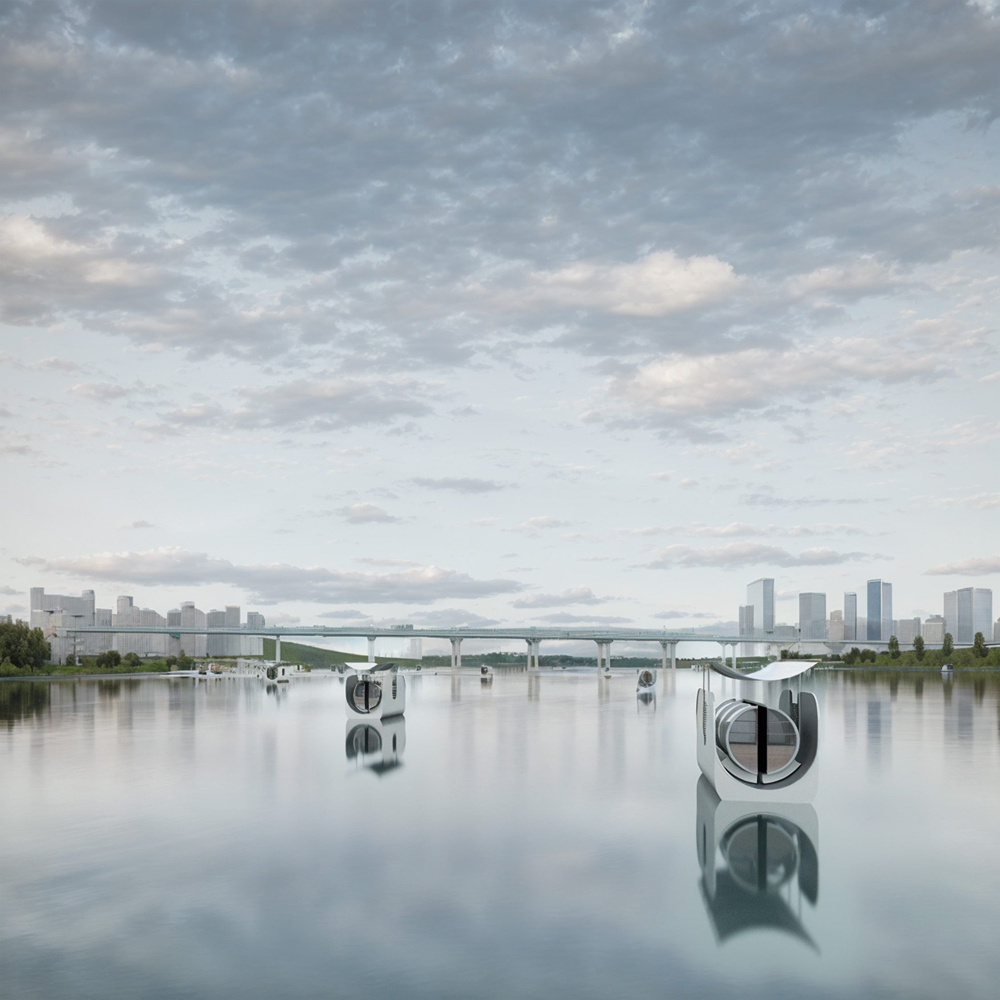
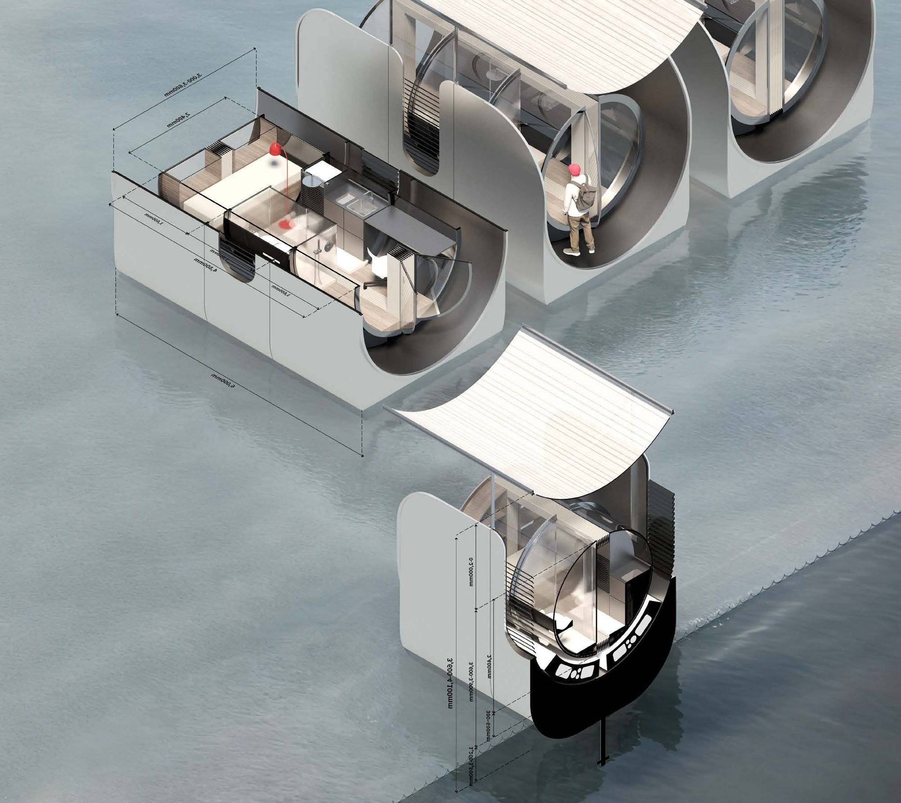
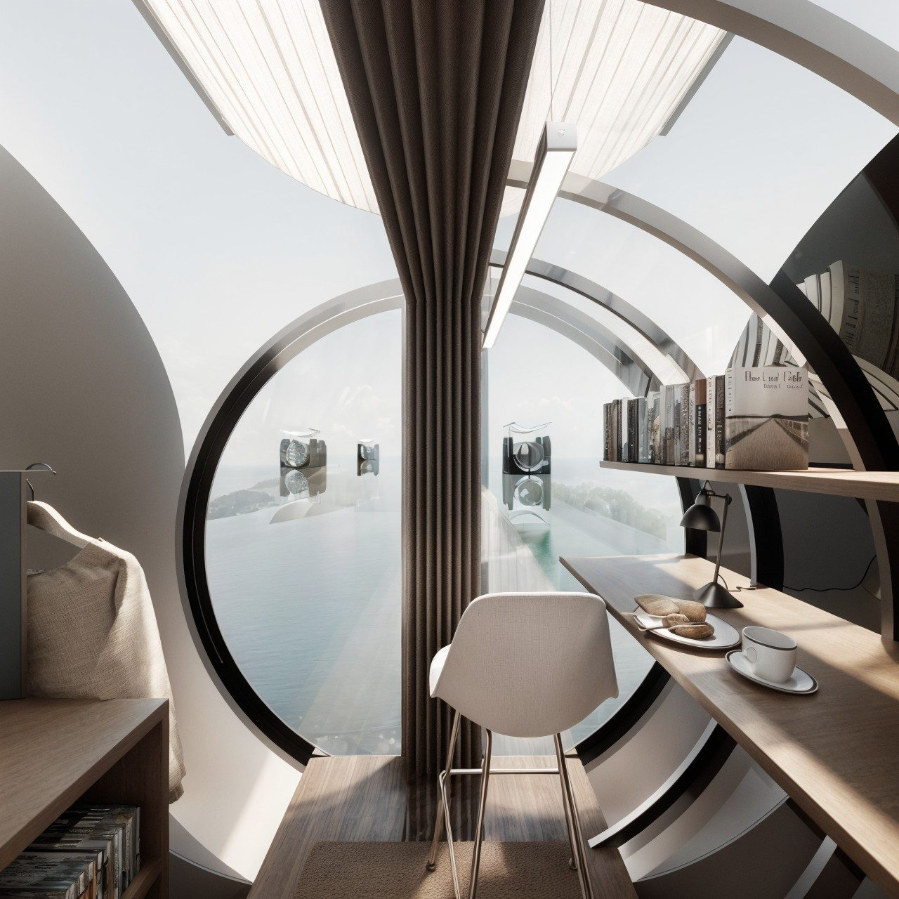
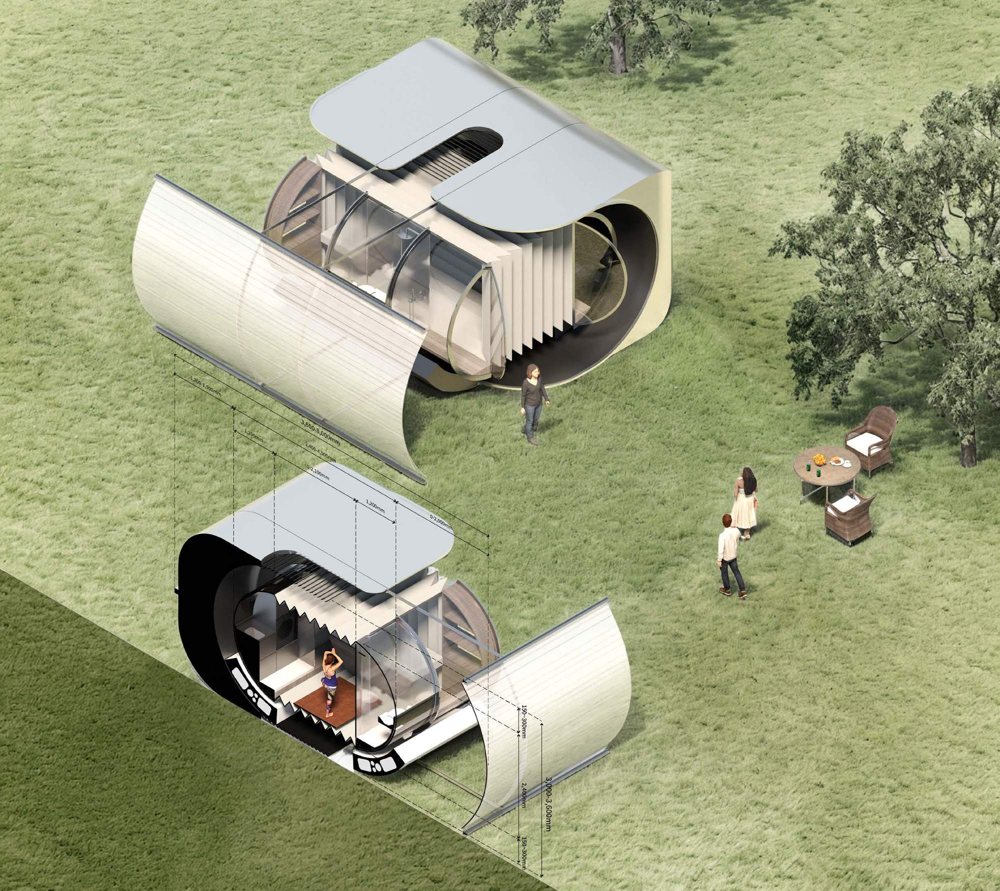
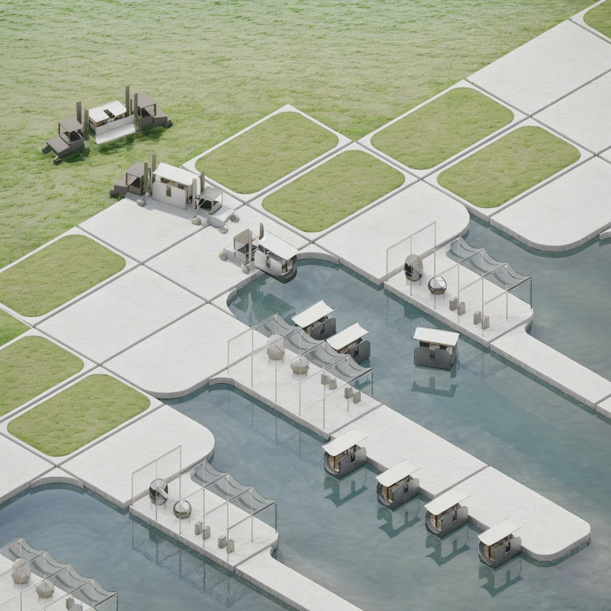
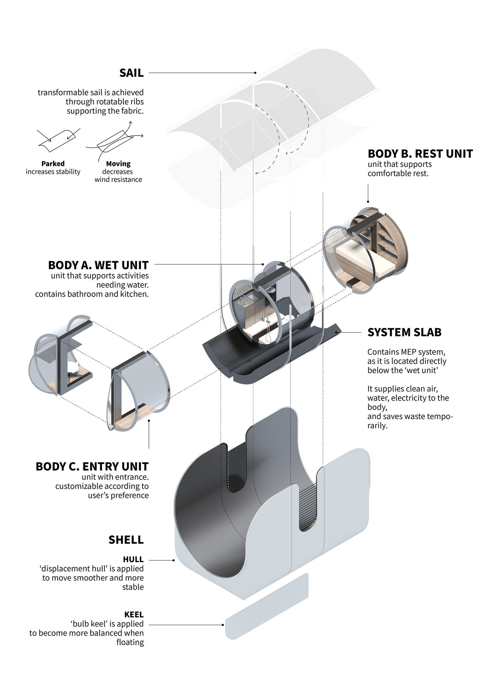

Seoul’s traffic problem is a scheduling problem. On weekdays everyone commutes inward to work; on weekends everyone drives outward to the city edge. The roads carry a full load in both directions. Meanwhile the Han River — a kilometre wide, connecting the metropolis horizontally to the countryside — stays famously underused.
Move the home, not the person
If a young household lives on the river beside its work, the weekday commute almost disappears. On Friday afternoon the home itself floats downriver to the outskirts; on Sunday evening it returns to the Han River port nearest the workplace and prepares for the week. The traffic is not managed. It is simply not generated.

Condensation, on weekdays
In the city the unit stays closed. Condensed, it still holds everything a home needs — a wet unit with bathroom and kitchen, a rest unit, and an entry unit the occupant configures to taste. The result is a complete, convenient rest at the end of a long weekday rather than a compromise.


Compensation, at the weekend
Arriving at a rural port, the unit docks, takes on clean energy and water, discharges its waste, and is expanded with the help of a forklift. The extended unit supports everything that needs room — the compensation for a week spent condensed.


Built as a boat
The unit is resolved as a vessel, not as a room that floats. A displacement hull makes movement smoother, a bulb keel keeps it balanced, and a transformable sail on rotatable ribs adds stability when parked and sheds wind resistance when moving. Under the wet unit a system slab carries the MEP, supplying air, water and electricity and holding waste until the next dock.
